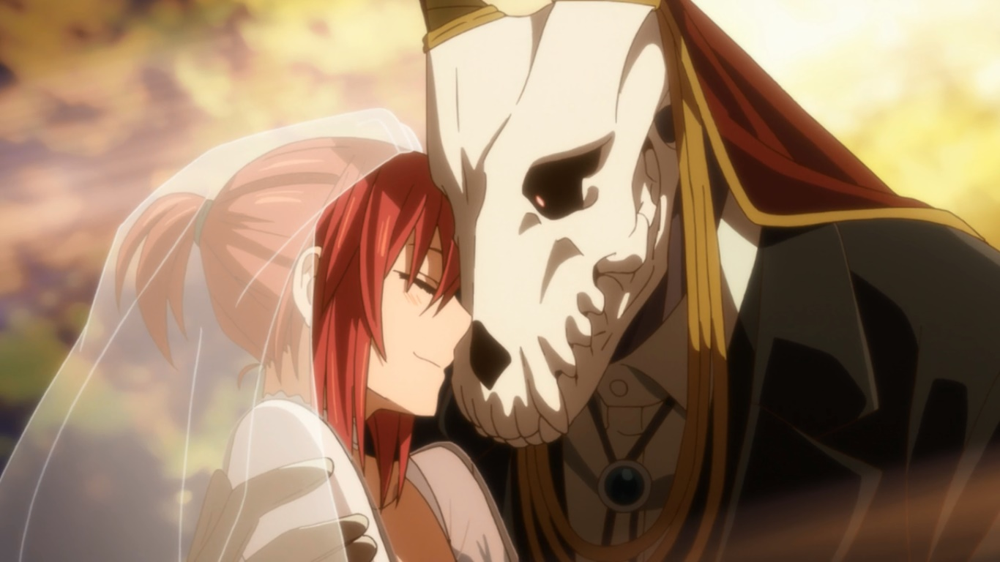

Animes
Os animes fazem parte do meu dia a dia. Com histórias cativantes, gráficos incríveis e personagens marcantes, cada anime é uma experiência única e emocionante. A seguir alguns animes que gosto.
Another

A história se passa na cidade de Yomiyama, com a chegada de Koichi Sakakibara que acaba de se mudar de Tókio por causa do trabalho do pai. Ele é matriculado na escola da cidade, a Yomi Norte e fica na sala 3 do nono ano. Porém esta sala carrega um grande segredo, uma espécie de maldição que há 26 anos atrás uma garota que a frequentava morreu, mas naquele ano todos fingiram que ela ainda estava viva… Koichi percebe que há algo estranho na sala, com os alunos, inclusive com os professores, mas ninguém lhe conta o que é. No seu primeiro dia de aula ele conhece uma menina chamada Misaki Mei, mas parece que ele é o único que tem coragem o suficiente para conversar com ela e falar sobre ela. Eles recomendam que se afaste de Mei senão coisas ruins podem acontecer… então, as mortes começam.
Mahoutsukai no Yome
Chitose Hatori, uma menina japonesa de 16 anos, tem um dom um tanto quanto incomum: A capacidade de enxergar seres que dividem o mundo com os humanos. Após a morte de sua mãe, passou de família em família, em um eterno ciclo de abandono, por não conseguirem lidar com essa criança “estranha”. Prestes a desistir de sua vida no terraço da escola, um leiloeiro estrangeiro aparece e pergunta se ela não gostaria de oferecer sua vida em um leilão nada tradicional, neste momento, ela descobre que é uma Sleigh Beggy, um ser amado por esses vizinhos, como são chamados na Inglaterra, país para onde é levada. No Leilão, sua vida é comprada pelo mago Elias Ainsworth, um ser que não pertence nem ao mundo humano e nem ao mundo féerico, algo no meio termo, incerto e indeterminado, com um aspecto humanóide. A partir de agora, Chise se torna noiva de Elias, e a história se desdobra pelos aprendizados, encontros e magias em uma parte da Inglaterra ainda banhada pelo povo fae.
Rakudai Kishi no Cavalry
Se passa em um mundo de fantasia, onde Ikki Kurogane é um estudante de uma escola de cavaleiros mágicos. Ele é rotulado como "Cavaleiro Falho" ou "O Pior" porque não tem habilidades mágicas. Um dia, Ikki é desafiado para um duelo contra Stella Vermillion, uma princesa estrangeira e a estudante "Número 1", o perdedor do duelo deve ser obediente ao vencedor por toda a vida.
Kamisama Hajimemashita
Após ver seu pai fugir de casa por causa de dividas de jogo e sendo expulsa do seu apartamento, Nanami conhece Mikage, um homem estranho que tem muito medo de cachorros, Nanami o salva de um cachorro e acaba contando sua história, como agradecimento pelo salvamento ele oferece à garota uma estadia em sua casa, mas chegando lá ela acaba descobrindo que a casa na verdade é um templo! Agora ela acaba tendo que cuidar do templo, tendo um monte de responsabilidades que não entende, perigos que ela ainda não sabe e formando contrato que ela pode acabar se arrependendo ou não no futuro.
Tensei Shitara Slime Datta Ken
Minami Satoru, funcionário de uma grande coorporação, é assassinado e renasce num mundo paralelo. No entanto, algo está diferente: ele renasceu como um slime. Lá ele faz muitos amigos e com suas novas habilidades ele enfrenta diversas batalhas que o deixam entre a vida e a morte.